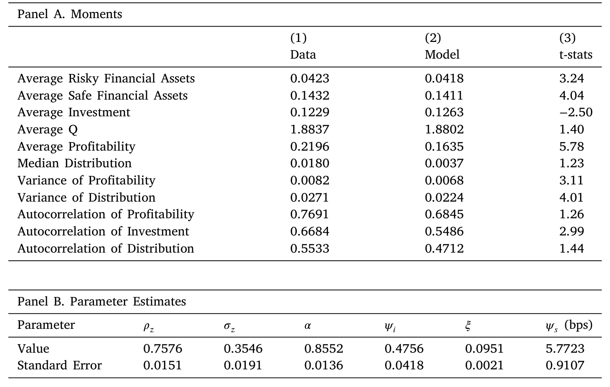
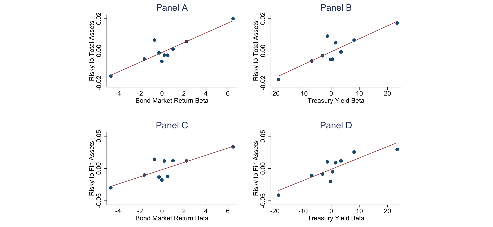
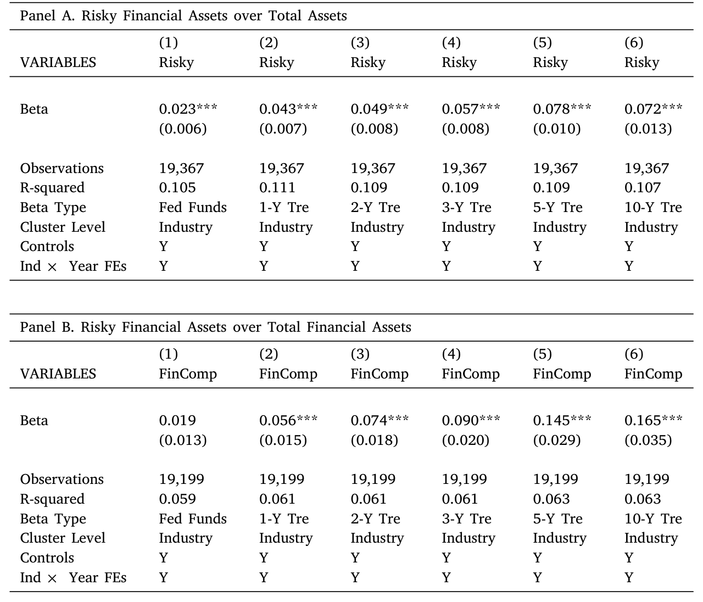
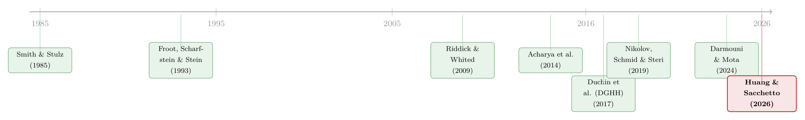

把风险揣进兜里：企业为什么主动持有有风险的金融资产？
本文我读的是 Huang & Sacchetto (2026, Journal of Financial Economics)。他们盯住了一个看似反常识的问题：非金融企业为什么要把宝贵的现金，拿去买有风险的金融资产（数据里主要是债券）？过去主流的解释多半把矛头指向大公司的治理缺陷与避税动机；这篇论文却用一个动态投资模型证明，对更广泛的一大批企业而言，持有风险资产其实是一种理性的对冲——当一家公司的「融资缺口」恰好与债券回报正相关时，债券能在它最缺钱投资的那些时点上升值，从而把内部现金流和投资机会在时间上对齐。他们把这个可度量的对象命名为「融资缺口贝塔」，并用一套从 10-K 脚注里机器抽取的、迄今最完整的风险资产持仓数据，验证了它。
1 一个有点反常识的问题
先抛一个画面。一家造汽车、卖软件、或者做生物医药的公司，账上趴着一笔现金。按教科书的直觉，这笔钱要么投回主业（买设备、招人、做研发），要么以最安全的形式存着（国库券、货币基金）以备不时之需。可现实是，很多非金融企业并不满足于「最安全」，它们把相当一部分储蓄投进了风险金融资产（risky financial assets）——公司债、较长久期的国债、甚至权益类工具。
这件事到底有多普遍？Duchin、Gilbert、Harford 和 Hrdlicka（2017，下称 DGHH）给出过一个让人有点吃惊的数字：在标普 500 公司里，风险金融资产占到它们金融资产持仓的 40% 以上，约合总账面资产的 6%。然而 DGHH 顺着这条线索往下挖，结论却是负面的：在恰当地对资本成本做了调整之后，一美元投在风险资产上的价值，竟然低于投在安全资产上的价值。换句话说，这是在毁损价值。于是他们把原因归到了公司治理糟糕、CEO 过度自信这些「行为/代理」因素上。后来 Darmouni 和 Mota（2024，下称 DM）又补了一刀：跨境税收会诱导大型跨国企业把可交易证券留在海外，以规避利润汇回的税负。
诚然，这两条解释都很有说服力。但请注意它们共同的一个软肋：样本都偏向巨头——DGHH 看的是标普 500，DM 盯的是按资产规模排前 200 的公司。于是一个自然的问题浮出水面：对那些不在聚光灯下、规模没那么大的广大企业而言，持有风险资产是否可能出于一个完全理性、甚至「正经」的理由？ 这正是这篇论文要回答的。
2 一个理性的故事：把风险资产当作对冲工具
作者给出的答案，核心只有一句话：风险债券是一种状态依存的流动性（state-contingent liquidity）工具。要理解这句话，得先把「预防性储蓄（precautionary savings）」这件事讲透。
一家面临外部融资成本（costly external financing）的企业，最怕的不是没有好项目，而是「好项目来的时候手里没钱」。当投资机会变好、但内部现金流又不够时，它被迫去外部市场融资，要付出真金白银的代价。为了对冲这种风险，企业会提前攒钱。问题在于：攒成什么形式？如果只能攒安全资产（像经典模型 Riddick & Whited, 2009 那样），那这笔钱的回报是平的、与企业自身处境无关。但如果企业能攒一种回报恰好在「我最缺钱投资」时上升的资产呢？那它就一举两得了——既攒了钱，又买了一份「缺钱时自动到账」的保险。
这就是论文标题里 "Bonding with Risk" 的双关：用债券（bond）去绑定（bond）风险。关键概念是企业的融资缺口（financing deficit），即「投资所需资金」减去「内部产生的利润」。作者的命题是：
当一家企业的融资缺口与风险资产回报正相关时，把储蓄投进风险资产会提升企业价值——因为它改善了内部现金流与投资机会在时间上的对齐。
这个机制，和信用额度（credit lines）惊人地相似。Acharya 等（2014）与 Nikolov、Schmid、Steri（2019）都强调，信用额度的价值在于它能在特定状态下提供流动性。区别只在于：信用额度对冲的多是特质冲击（企业自己出事时去提款），而风险债券对冲的是总量冲击（宏观状态变化通过市场回报传导）。两者在管理不同来源的不确定性上是互补的。（关于「内部流动性如何被企业花掉」这条线，可参见我之前写的《一万七千亿美元的「自由现金」，被花到哪里去了？》。）
下面这张图把这个机制画得很清楚：融资缺口与「投资于风险证券的激励」之间的关系，正是整篇论文的支点。

Figure 4: Financing deficit and the incentives to invest in the risky security.
3 模型：从贝尔曼方程到「融资缺口贝塔」
光有直觉还不够。这篇论文真正的硬功夫，是把上面的故事写成一个无限期、离散时间的动态模型，然后结构估计出来。我们一步步走一遍最关键的部分。
第一步：企业的技术与摩擦。 企业 \(j\) 在 \(t\) 期用资本 \(k_{jt}\) 生产，经营利润为
$$\pi_{jt}=\exp(x_t+z_{jt})\,k_{jt}^{\alpha},$$
其中 \(\alpha\) 刻画利润函数的曲率，\(x_t\) 与 \(z_{jt}\) 分别是总量和特质生产率冲击，都服从 \(AR(1)\)：
$$x_t=\rho_x x_{t-1}+\sigma_x\varepsilon^x_t,\qquad z_{jt}=\rho_z z_{jt-1}+\sigma_z\varepsilon^z_{jt}.$$
资本按 \(k_{jt+1}=(1-\delta)k_{jt}+i_{jt+1}\) 累积，并伴随二次调整成本 \(\tfrac{\psi_i}{2}\,(k_{jt+1}-(1-\delta)k_{jt})^2/k_{jt}\)。这些都还是标准配置。
第二步：两种储蓄工具，和一个随机贴现因子。 这里是本文相对前人的关键扩展。除了一期到期的无风险证券，作者让企业还能投一种风险债券。沿用 Gomes & Schmid（2010），随机贴现因子（stochastic discount factor, SDF）设为
$$\log M(x_t,x_{t+1})=\log(\eta)-\gamma\,(x_{t+1}-x_t),$$
\(\eta\in(0,1)\) 是时间偏好，\(\gamma\) 是风险厌恶。由此可得无风险利率
$$r_f(x_t)=\frac{1}{\eta}\exp\!\left(-\gamma(1-\rho_x)x_t-\frac{\gamma^2}{2}\sigma_x^2\right)-1.$$
风险债券的设定很巧妙：它每期到期的本金比例为 \(\mu\)（因此久期约为 \(1/\mu\)），其价格满足
$$q^s(x_t)=\frac{\mu+r_f}{1+r_f(x_t)}+(1-\mu)\,\mathbb{E}\!\left[M(x_t,x_{t+1})\,q^s(x_{t+1})\,\middle|\,x_t\right].$$
第一项是「已到期本金 \(\mu\) + 票息 \(r_f\)」按无风险利率贴现后的确定部分；第二项是那 \((1-\mu)\) 没到期的部分、其转售价格在 \(t\) 时点尚不确定的风险部分。\(\mu\) 越小、久期越长，债券对利率波动的暴露就越大——这正是后面「利率风险」检验的模型根基。
第三步：现金流、外部融资成本与贝尔曼方程。 把经营利润、税收、两种资产的买卖与调整成本都加总，得到现金流 \(e_{jt}\)。当 \(e_{jt}<0\)（需要对外融资）时，企业付出线性外部融资成本
$$\Lambda_{jt}=\xi\,|e_{jt}|\,\mathbf{1}_{\{e_{jt}<0\}},$$
净分配 \(d_{jt}=e_{jt}-\Lambda_{jt}\)。企业的价值函数满足贝尔曼方程
$$v(x,z,s,c,k)=\max_{s',c',k'}\; d(x,z,s,c,k,s',c',k')+\mathbb{E}\!\left[M(x,x')\,v(x',z',s',c',k')\,\middle|\,x,z\right].$$
五个状态变量 \((x,z,s,c,k)\)、三个控制变量 \((s',c',k')\)，没有解析解，只能用价值函数迭代数值求解。
第四步：核心条件。 真正把「对冲故事」逼出来的，是对投资 \(k'\) 求一阶条件。它长这样（我把各部分用旁注标出来）：
直觉是：等式右边是多投一单位资本的边际价值，左边是它的边际成本。当 \(x\) 高、投资机会好时，右边上升，企业想多投；但如果此时内部现金不够，左边的融资楔子 \((1+\xi\cdot\mathbf{1})\) 就被激活，投资变贵。于是，任何能在「右边变高、左边却被融资成本卡住」的状态下提供现金的资产，都是宝贵的。如果风险债券的回报恰好在这些状态升值，它就直接松动了这个约束——这就是模型给出的、关于风险资产持有的对冲动机。
从模型到可度量的对象。 由于企业在规模和生产率上是异质的，这种「债券回报与融资缺口的同向程度」因企业而异。作者把它定义为融资缺口贝塔（financing deficit beta）：融资缺口对风险资产回报的敏感度。在用模拟数据做的回归里（Table 2、Table 10），企业的最优风险债券持有，确实与它的融资缺口贝塔正相关。这就把一个抽象的对冲故事，落成了一个可以拿到真实数据里去检验的预测。
结构参数则用模拟矩估计（Simulated Method of Moments, SMM）得到，匹配投资率、现金持有、利润率等矩（Table 1）。

Table 1: Structural estimation results.
4 识别策略：两步法与一个新数据集
有了模型预测，剩下的就是去数据里验证「融资缺口贝塔越高、风险资产持有越多」。但这里横着一个老大难问题：美国企业的风险金融资产持仓，根本没有现成的数据库。 现金、短期投资在 Compustat 里有，可「这家公司账上到底持有多少公司债、多长久期的国债」并不直接可得。
作者的解法很现代：用机器学习算法，从 SEC 的 10-K 文件脚注里抽取信息，重建企业层面、按公允价值计的风险金融资产持仓。之所以能从 2009 年起做，是因为 FASB 的 SFAS No.157（公允价值计量准则）在那年开始实施，企业被要求披露金融资产的公允价值层级。最终样本是 2009–2018 年、2886 家美国企业、19,367 个企业-年观测——作者称这是迄今最完整的企业风险金融资产持仓样本。我认为这套数据本身，就是这篇论文最实在的贡献之一。
识别分两步走：
- 第一步（时间序列，逐企业）： 把融资缺口对参照风险资产的回报做时序回归，估出每家企业的融资缺口贝塔。形式上大致是 \(\;\text{FD}_{jt}=a_j+\beta_j^{FD}\,R^s_t+u_{jt}\)，其中参照回报 \(R^s_t\) 在主设定里取 Bloomberg 美国综合债券指数回报、或 10 年期国债收益率变化的反号。
- 第二步（横截面）： 把风险金融资产的公允价值（用总资产、或金融资产总额标准化）对第一步估出的 \(\widehat{\beta}^{FD}_j\) 做横截面回归，并控制常见企业特征。
这是一个典型的两步估计（two-step estimation），第二步用到了第一步的「生成回归元（generated regressor）」，所以标准误需要修正——参考文献里出现的 Murphy & Topel（1985）和 Newey & McFadden（1994）正是干这个用的。
5 他们发现了什么
先看主结果。横截面上，融资缺口贝塔与两个被解释变量都显著正相关：一是风险金融资产/总资产，二是风险资产在总储蓄组合里的占比。量级也不小：用 Bloomberg 指数算出的融资缺口贝塔，每上升一个标准差，企业风险金融资产/总资产约提高 0.81 个百分点——这相当于样本均值（4.2% 的总资产）的约 20%。对一个横截面相关性来说，这个经济量级是可观的。下面这张图把这条核心相关性画了出来。

Figure 7: Financing deficit beta and corporate financial assets.

Table 4: Regressions of corporate financial asset holdings — main results.
接着，一个自然的问题是：企业到底在对冲哪一种风险？ 作者用不同期限的参照债券（联邦基金利率，以及 1、2、3、5、10 年期国债）重估融资缺口贝塔，再跑第二步回归。结果很干净：贝塔系数的量级和显著性，都随参照债券期限的拉长而上升。这强烈暗示，企业用风险资产对冲的，是中长期利率风险，而不是短端的波动。

Table 5: Interest-rate risk and risky financial asset holdings.
然后作者把别的风险因子也拉进来试：股票市场回报、Pástor-Stambaugh（2003）的流动性因子、以及投资级和高收益公司债利差变化的反号。结果只有权益和投资级公司债对应的融资缺口贝塔在 5% 水平上显著——说明股市状况和信用风险也有影响，但都不及利率风险来得主导。
但真正关键、也是把这篇论文和 DGHH/DM 接上的一步，在子样本切割：
- 按规模切：融资缺口贝塔对小企业显著为正，对大企业显著性减弱。这恰好与 DGHH、DM 相呼应——对巨头而言，治理与税收才是主线，预防性动机退居其次。
- 按融资缺口波动率切：正向关系集中在高波动企业，低波动企业里不显著。面临更大不确定性的企业，对冲动机更强。
- 按研发强度切：高研发企业里关系显著，低研发企业里弱。
于是反转出现了：DGHH 看到的「价值毁损」并不是故事的全部，它只是巨头那一端的故事。把视野放宽到广大中小企业，一个理性的、预防性的对冲动机就浮现出来了——这两条解释并不矛盾，而是互补的。
最后，作者做了一个反事实实验：禁止企业投风险资产、只能持安全资产。结果是企业会用安全资产部分替代，但储蓄总量下降，投资、规模、利润随之下滑，对外部融资的依赖上升；尽管交易成本和税负更低，金融资产的现金流反而减少，导致更频繁、更大额的外部融资。算下来，企业价值相对基准模型下降约 0.35%，且这个损失在经济繁荣期和小企业中更大。这把「风险资产是一份有价值的期权」量化了出来。
6 文献脉络
把这篇论文放回它所在的谱系里，逻辑会更清楚。
最早的源头是风险管理理论：Smith & Stulz（1985）讨论企业为何对冲，Froot、Scharfstein 和 Stein（1993）则提出企业对冲是为了协调投资与融资政策、平滑现金流——这正是本文机制的思想母体。
接着是公司储蓄的实证与动态模型这一支。Opler、Pinkowitz、Stulz 和 Williamson（1999）奠定了现金持有的实证范式；Riddick & Whited（2009）写出了「企业为何储蓄」的经典动态模型，但其中企业只能持有无风险资产。后来 Nikolov & Whited（2014）、Nikolov、Schmid 和 Steri（2019）把代理冲突、信用额度等引入动态流动性框架，而 Acharya 等（2014）则把信用额度刻画为「受监督的流动性保险」。
然后是直接的对手戏：DGHH（Duchin et al., 2017）把风险金融资产摆上台面，却给了一个治理/行为的负面解读；DM（Darmouni & Mota, 2024）补上税收视角。两者都聚焦巨头。

Huang & Sacchetto（2026）所处的位置，正是把 Riddick-Whited 式的动态储蓄模型，扩展出一个风险证券作为储蓄工具，从而在 DGHH/DM 之外，为「广泛企业为何持有风险资产」提供了一个理性、可度量、可结构估计的对冲解释。它既继承了风险管理理论的内核，又用一套新数据把它检验落地。
7 我的评论
先说我欣赏的地方。第一，问题问得好：把一个看似「非理性」的现象，重新放回理性框架里检验，而不是急着归因于治理或行为偏差，这是好的研究品味。第二，数据是硬通货：从 10-K 脚注 ML 抽取的全样本风险资产持仓，本身就是一份能让后续研究受益的公共品。第三，模型与实证咬合得紧：融资缺口贝塔不是事后凑出来的代理变量，而是从一阶条件里自然长出来、又能在模拟数据里复现的对象，这种「模型预测什么、就去测什么」的纪律性值得称道。
但对识别，我有几点保留。其一，这终究是一个横截面相关性。融资缺口贝塔与风险资产持有之间，可能同时被某个未观测的企业特征（比如经营周期性、客户集中度）驱动，论文的子样本切割是支持性证据，却不是干净的外生冲击。我会更想看到一个准自然实验——例如利用某次会计准则变化、或某个行业层面的久期暴露冲击，来给这个相关性注入因果含义。其二，样本期 2009–2018 恰好是一段超低利率、利率单边下行的特殊时期。在这种环境里，「持有长久期债券」既是对冲、也顺带是一笔赚钱的久期押注，两者难以分离。把样本延伸到 2022–2023 的加息周期再看一眼融资缺口贝塔的解释力，会是非常有说服力的稳健性检验。其三，从脚注抽取持仓不可避免有度量误差与披露选择——只有披露了的才进样本，这对小企业尤其可能有偏。
还有一点更微妙：模型把风险资产对冲的逻辑建立在「现金并非状态无关的同质资产」之上——一块钱在缺钱投资时和在宽裕时，价值并不相同。这其实和「现金的可替代性」这个更一般的话题相通（可对照《钱的温度：当「一块钱永远等于一块钱」不再成立》）。我会好奇，如果把企业内部不同「口袋」的流动性也做成非同质的，对冲动机的强度会不会进一步被放大。
总体而言，这是一篇扎实、诚实、贡献明确的论文。它没有声称推翻 DGHH，而是把地图补完整了——这种「补位」式的贡献，在我看来往往比「翻案」式的更经得起时间。
评论与延伸（Q&A + 研究方向）
几个可能的疑问
Q：融资缺口贝塔到底测的是什么？它和企业债券持仓会不会「机械相关」？
它是第一步时序回归里、融资缺口对参照债券回报的敏感度，只用回报和缺口估计，不含持仓信息；持仓只出现在第二步横截面的左侧。所以它不是机械相关。真正要担心的是两步估计的生成回归元问题（标准误需按 Murphy-Topel / Newey-McFadden 修正），以及遗漏变量带来的内生性，而非定义上的循环。
Q：这和 DGHH 的「治理差、CEO 过度自信」解释是不是矛盾？
不矛盾，是互补。DGHH 看的是标普 500 巨头，本文按规模切样本后发现，对冲动机对小企业显著、对大企业减弱——恰好把巨头那一端让给了治理/税收解释。两条线合起来，才是完整的横截面。
Q：「持有风险债券来对冲」听起来自相矛盾——风险资产怎么能降低风险？
关键在协方差而非方差。对冲不要求资产本身没波动，而要求它的回报在企业「最缺钱」的状态下升值。一个正的融资缺口贝塔，意味着债券恰好在投资机会好、内部现金又不够时给企业送来流动性——这和信用额度的状态依存逻辑是一回事。
Q：为什么主导的是利率风险，而不是股市或信用风险？
因为企业持有的风险资产本身主要就是债券。论文用不同期限债券重估贝塔，发现系数随期限单调上升，指向中长期利率风险；股市和投资级公司债因子也显著，但量级更小。这是数据说话，而非先验设定。
Q：从 10-K 脚注用 ML 抽数据，可信吗？
可信度建立在 SFAS 157（2009 年起）强制披露公允价值这一制度变化上，使得脚注里有可抽取的结构化信息。优点是覆盖面空前（2886 家、近两万观测）；隐忧是度量误差、披露选择偏误，以及样本期处在低利率单边行情，外推到加息周期需谨慎。
Q：0.35% 的企业价值损失，算大吗？
作为「禁止投风险资产」的反事实代价，这是一个边际期权的价值，看起来温和；但它在繁荣期和小企业中明显更大，说明风险资产在「投资机会最值钱」的时点上承托了投资。换句话说，均值不大，分布很偏——这反而强化了对冲故事。
几个可能的研究问题与提案
1. 谁在「对手盘」？——企业风险储蓄与公司债市场的供需。 经济故事：当成千上万家企业出于对冲动机买入投资级公司债并长期持有，它们其实是在为公司债市场提供一类「买入并持有」的稳定需求；这会压低自由流通量、影响二级市场流动性。机制上，企业储蓄端的行为和债券市场微观结构是连通的。可行性：中。需要把本文的持仓数据与 TRACE 成交、Mergent FISD 发行特征拼起来，再用利率/利差冲击做识别；难点在于把企业持有与市场流动性的因果方向理清。
2. 加息周期的「压力测试」：融资缺口贝塔的解释力是否稳健？ 经济故事：2009–2018 是利率下行期，持有长久期债券既对冲又赚久期；2022–2023 的快速加息提供了一个符号相反的环境。如果对冲动机是真的，融资缺口贝塔在加息期应当仍然解释持有差异（甚至企业会主动缩久期）。可行性：高。只需把样本延展到 2023 年、重估贝塔，做样本外检验，数据来源与本文一致。
3. 信用额度 vs 风险债券：替代还是互补？ 经济故事：本文把风险债券类比为对冲总量冲击的状态依存流动性，而信用额度（Acharya et al., 2014; Nikolov et al., 2019）对冲特质冲击。一个干净的问题是：在控制融资缺口贝塔后，未动用信用额度更多的企业，是否持有更少的风险债券？这能直接检验两种工具的互补/替代边界。可行性：中。需要 Capital IQ 的信用额度数据与本文持仓数据匹配。
4. 久期匹配：企业是否按投资期限挑债券期限？ 经济故事：本文已发现对冲主要针对中长期利率风险。更进一步：研发密集、项目周期长的企业，是否系统性地持有更长久期的债券，以匹配其投资现金流的时间结构？这是把「对冲」细化到「久期匹配」的检验。可行性：中。需要从脚注抽取持仓的期限结构（比本文的公允价值总额更细），并与企业投资周期的代理变量结合。
参考文献
- Acharya, V., Almeida, H., Ippolito, F., Perez, A., 2014. Credit lines as monitored liquidity insurance: Theory and evidence. Journal of Financial Economics 112(3), 287–319.
- Darmouni, O., Mota, L., 2024. The savings of corporate giants. Working paper.
- Duchin, R., Gilbert, T., Harford, J., Hrdlicka, C., 2017. Precautionary savings with risky assets: When cash is not enough. Journal of Finance 72(2), 793–852.
- Froot, K.A., Scharfstein, D.S., Stein, J.C., 1993. Risk management: Coordinating corporate investment and financing policies. Journal of Finance 48(5), 1629–1658.
- Huang, T., Sacchetto, S., 2026. Bonding with risk: Corporate investment and savings in risky financial assets. Journal of Financial Economics 181, 104283.
- Nikolov, B., Schmid, L., Steri, R., 2019. Dynamic corporate liquidity. Journal of Financial Economics 132(1), 76–102.
- Nikolov, B., Whited, T.M., 2014. Agency conflicts and cash: Estimates from a dynamic model. Journal of Finance 69(5), 1883–1921.
- Opler, T., Pinkowitz, L., Stulz, R., Williamson, R., 1999. The determinants and implications of corporate cash holdings. Journal of Financial Economics 52(1), 3–46.
- Pástor, L., Stambaugh, R.F., 2003. Liquidity risk and expected stock returns. Journal of Political Economy 111(3), 642–685.
- Rampini, A.A., Viswanathan, S., 2010. Collateral, risk management, and the distribution of debt capacity. Journal of Finance 65(6), 2293–2322.
- Riddick, L.A., Whited, T.M., 2009. The corporate propensity to save. Journal of Finance 64(4), 1729–1766.
- Smith, C.W., Stulz, R.M., 1985. The determinants of firms' hedging policies. Journal of Financial and Quantitative Analysis 20(4), 391–405.